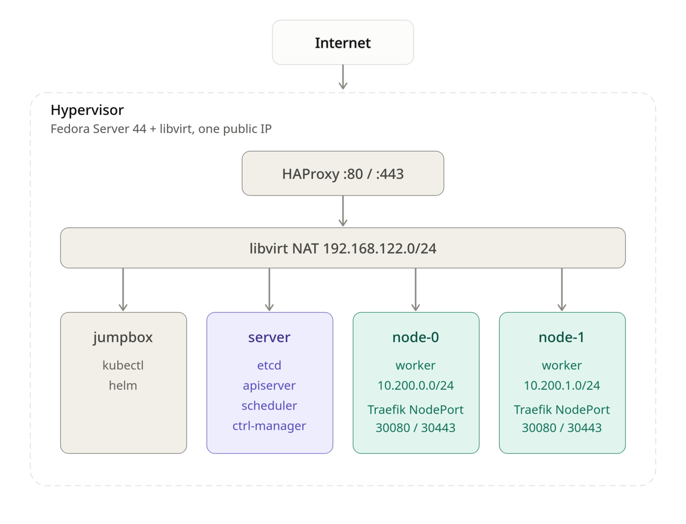

Kubernetes the hard way on Fedora with libvirt
This post is a short write-up of how I built a Kubernetes cluster by hand, following Kubernetes The Hard Way by Kelsey Hightower in its Rocky Linux adaptation by Wale Soyinka.
The Rocky Linux labs target Enterprise Linux on x86_64. I used Fedora Server 44 instead, with all the machines running as libvirt VMs on a single hypervisor that has only one public IP. Then I went further than the labs: cluster DNS, Argo CD, and public HTTPS access for apps.
Architecture¶

| VM | Role |
|---|---|
jumpbox |
Admin machine: kubectl, helm, certificates and configs |
server |
Control plane: etcd, kube-apiserver, kube-controller-manager, kube-scheduler |
node-0, node-1 |
Workers: containerd, kubelet, kube-proxy |
| Network | Range |
|---|---|
| Pod network node-0 | 10.200.0.0/24 |
| Pod network node-1 | 10.200.1.0/24 |
| Services | 10.32.0.0/24 (API 10.32.0.1, DNS 10.32.0.10) |
Prerequisites¶
- A host running Fedora Server with virtualization enabled
- libvirt with
virt-installandvirsh - A Fedora Server 44 install image for the VMs
- Optional, for public access: a domain name pointing to the hypervisor's public IP
Install the virtualization stack on the host:
$ sudo dnf install -y @virtualization
$ sudo systemctl enable --now libvirtd
I created four VMs on the default libvirt NAT network. An example for one machine (adapt CPU, memory, disk and image path):
$ sudo virt-install \
--name node-0 \
--vcpus 2 --memory 4096 \
--disk size=20 \
--os-variant fedora-44 \
--network network=default \
--location /var/lib/libvirt/images/Fedora-Server-dvd-x86_64-44.iso \
--graphics none --extra-args 'console=ttyS0'
Once all four are installed:
$ sudo virsh list --all
Id Name State
-------------------------
2 server running
3 jumpbox running
4 node-0 running
5 node-1 running
Following the labs¶
I followed the Rocky Linux labs in order. Most commands work unchanged on Fedora since both use dnf, systemd and NetworkManager.
- Prerequisites
- Set Up The Jumpbox
- Provisioning Compute Resources
- Provisioning a CA and Generating TLS Certificates
- Generating Kubernetes Configuration Files for Authentication
- Generating the Data Encryption Configuration and Key
- Bootstrapping the etcd Cluster
- Bootstrapping the Kubernetes Control Plane
- Bootstrapping the Kubernetes Worker Nodes
- Configuring kubectl for Remote Access
- Provisioning Pod Network Routes
- Smoke Test
At the end the smoke test passes: deployments, port-forward, logs, exec and NodePort services all work. But the cluster is still bare, and a few things bit me as soon as I tried to install a real application.
Lesson 1: check the pod routes on every machine¶
Lab 11 adds static routes so each machine can reach the other workers' pods. Mine were incomplete: server only had a route to node-0's pods, and the two workers had no route to each other. The smoke test doesn't catch this because it only uses one pod.
Every machine needs a route to every other worker's pod network:
$ ssh root@server 'ip route | grep 10.200'
10.200.0.0/24 via <node-0 IP> dev enp1s0
10.200.1.0/24 via <node-1 IP> dev enp1s0
$ ssh root@node-0 'ip route | grep 10.200'
10.200.0.0/24 dev cni0 proto kernel scope link src 10.200.0.1
10.200.1.0/24 via <node-1 IP> dev enp1s0
ip route add is lost at reboot. On Fedora, make sure the routes are permanent with NetworkManager:
$ nmcli -g NAME,DEVICE con show --active
$ sudo nmcli con modify '<connection>' +ipv4.routes '10.200.1.0/24 <node-1 IP>'
$ sudo nmcli con up '<connection>'
Note: A missing route shows up later as random timeouts: DNS that works on one node only, webhooks that time out, certificates that never get issued. Check routes first.
Lesson 2: the cluster has no DNS¶
The labs don't install a DNS add-on, so pods can't resolve service names. Almost every real app needs it :( . I installed CoreDNS with Helm from the jumpbox, on the IP the kubelets give pods as their DNS server (clusterDNS in the kubelet config):
$ ssh root@node-0 grep -A1 clusterDNS /var/lib/kubelet/kubelet-config.yaml
The first attempt crash-looped with plugin/loop: Loop ... detected: and the nodes /etc/resolv.conf points to a local resolver, so CoreDNS was forwarding queries to itself. The fix is to give it real upstream servers in a values file, coredns-values.yaml:
replicaCount: 2
service:
clusterIP: 10.32.0.10
servers:
- zones:
- zone: .
use_tcp: true
port: 53
plugins:
- name: errors
- name: health
configBlock: |-
lameduck 10s
- name: ready
- name: kubernetes
parameters: cluster.local in-addr.arpa ip6.arpa
configBlock: |-
pods insecure
fallthrough in-addr.arpa ip6.arpa
ttl 30
- name: prometheus
parameters: 0.0.0.0:9153
- name: forward
parameters: . 1.1.1.1 8.8.8.8
- name: cache
parameters: 30
- name: loop
- name: reload
- name: loadbalance
$ helm repo add coredns https://coredns.github.io/helm
$ helm upgrade --install coredns coredns/coredns -n kube-system -f coredns-values.yaml
Test from a pod:
$ kubectl run dnstest --rm -it --image=busybox:1.36 --restart=Never -- \
sh -c 'nslookup kubernetes.default.svc.cluster.local; nslookup github.com'
Lesson 3: the control plane can't reach Services¶
The server machine runs no kube-proxy, so the API server can't reach Service IPs. That breaks anything with an admission webhook, such as cert-manager (failed calling webhook ... context deadline exceeded).
The fix is one flag in /etc/systemd/system/kube-apiserver.service on server, which makes the API server call webhook pods by their pod IPs (reachable thanks to the routes from lesson 1):
--enable-aggregator-routing=true \
$ sudo systemctl daemon-reload && sudo systemctl restart kube-apiserver
Deploying Argo CD¶
Argo CD runs fine on this cluster once DNS works. It needs no persistent storage.
$ kubectl create namespace argocd
$ kubectl apply -n argocd --server-side --force-conflicts \
-f https://raw.githubusercontent.com/argoproj/argo-cd/stable/manifests/install.yaml
$ kubectl -n argocd get pods -w
Get the initial admin password:
$ kubectl -n argocd get secret argocd-initial-admin-secret \
-o jsonpath='{.data.password}' | base64 -d; echo
Exposing apps with a single public ip¶
Only the hypervisor is reachable from the internet, and there is no cloud LoadBalancer.
My setup :"
- Traefik as ingress controller, exposed as a NodePort on 30080 / 30443.
- HAProxy on the hypervisor, passing TCP 80 / 443 to those nodeports.
- cert-manager with let's encrypt for TLS.
-
One DNS record per app pointing to the public ip .
-
Traefik
$ helm repo add traefik https://traefik.github.io/charts
$ helm install traefik traefik/traefik -n traefik --create-namespace \
--set service.type=NodePort \
--set ports.web.nodePort=30080 \
--set ports.websecure.nodePort=30443 \
--set deployment.replicas=2 \
--set ingressClass.isDefaultClass=true
- HAproxy (on the hypervisor)
Added to /etc/haproxy/haproxy.cfg
frontend http_in
bind *:80
mode tcp
default_backend k8s_http
frontend https_in
bind *:443
mode tcp
default_backend k8s_https
backend k8s_http
mode tcp
balance roundrobin
server node0 <node-0 IP>:30080 check
server node1 <node-1 IP>:30080 check
backend k8s_https
mode tcp
balance roundrobin
server node0 <node-0 IP>:30443 check
server node1 <node-1 IP>:30443 check
$ sudo setsebool -P haproxy_connect_any 1
$ sudo firewall-cmd --permanent --add-service=http --add-service=https
$ sudo firewall-cmd --reload
$ sudo systemctl enable --now haproxy
- cert-manager and let's encryt
$ sudo setsebool -P haproxy_connect_any 1
$ sudo firewall-cmd --permanent --add-service=http --add-service=https
$ sudo firewall-cmd --reload
$ sudo systemctl enable --now haproxy
issuers.yaml :
apiVersion: cert-manager.io/v1
kind: ClusterIssuer
metadata:
name: letsencrypt-prod
spec:
acme:
server: https://acme-v02.api.letsencrypt.org/directory
email: <your email>
privateKeySecretRef:
name: letsencrypt-prod-key
solvers:
- http01:
ingress:
ingressClassName: traefik
- ArgoCD over HTTPS
Traefik terminates TLS, so ArgoCD serves plain HTTP behind it:
$ kubectl -n argocd patch configmap argocd-cmd-params-cm --type merge \
-p '{"data":{"server.insecure":"true"}}'
$ kubectl -n argocd rollout restart deployment argocd-server
apiVersion: networking.k8s.io/v1
kind: Ingress
metadata:
name: argocd-server
namespace: argocd
annotations:
cert-manager.io/cluster-issuer: letsencrypt-prod
spec:
ingressClassName: traefik
tls:
- hosts: [argocd.<your-domain>]
secretName: argocd-server-tls
rules:
- host: argocd.<your-domain>
http:
paths:
- path: /
pathType: Prefix
backend:
service:
name: argocd-server
port:
number: 80
$ kubectl get certificate -n argocd
$ argocd login argocd.<your-domain> --grpc-web --username admin
Argo CD is now reachable at https://argocd.